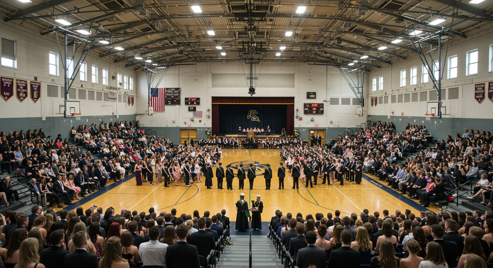
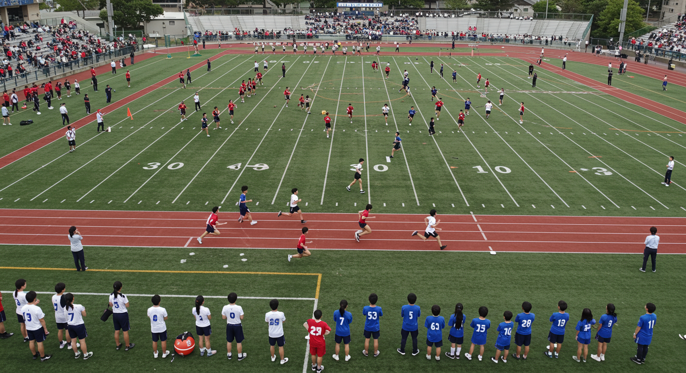
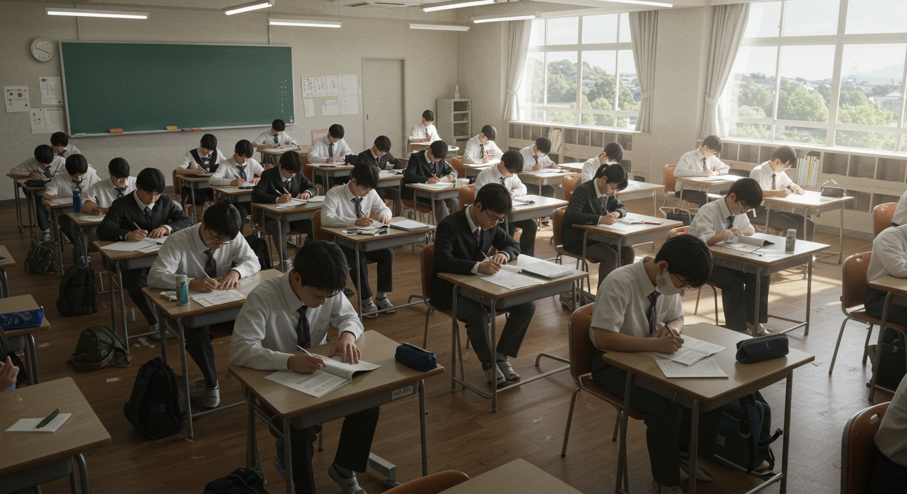
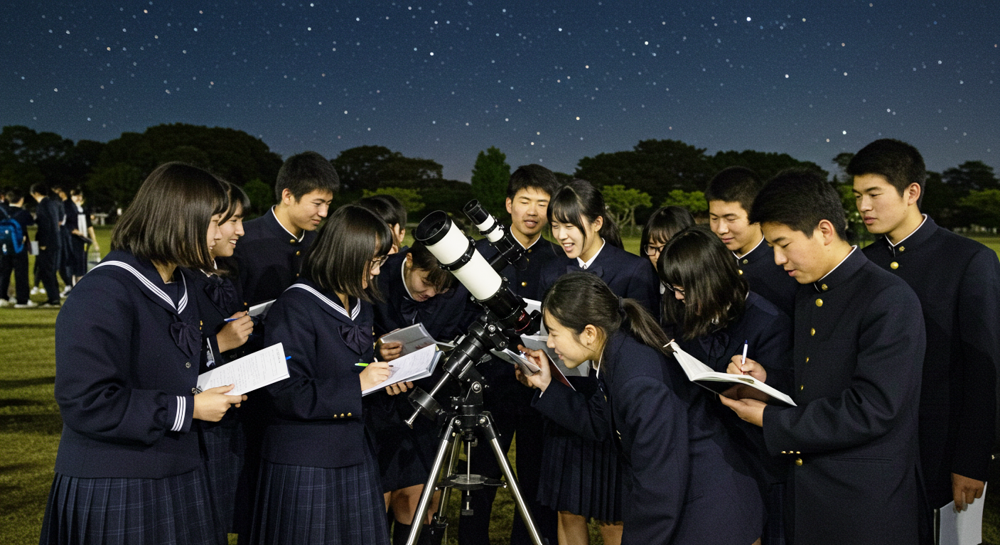
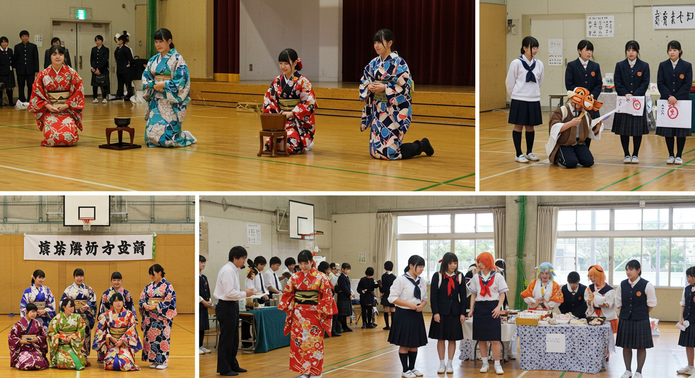
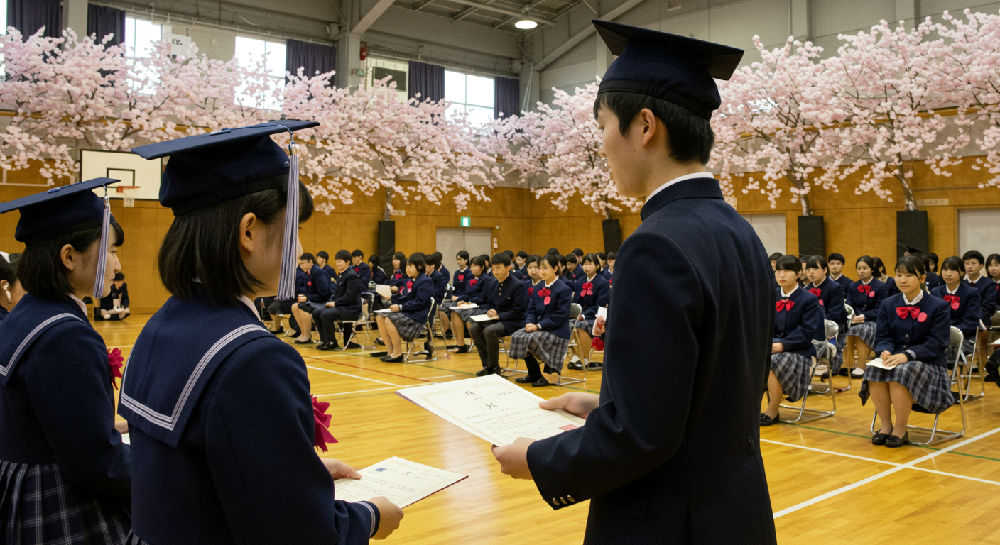

年間行事
●
4月
顕現の門 開扉式（入学式）
未明集会（始業式）

●
5月
因果走行祭（体育祭）

●
6月
虚空対話週間（面談期間）

●
7月
第一回 顕現試み（期末試験）
夏至観測会（天体観測行事）

●
8月
盛夏沈黙期間（夏休み）
●
9月
未明顕現祭（文化祭）
顕現評議選挙（生徒会役員選挙）

●
10月
震之講話特別集会（校長講話）
●
11月
第二回 顕現試み（期末試験）
影の参観日（保護者参観）
●
12月
終末反復式（終業式）
●
1月
新年顕現祈念集会（始業式）
●
2月
顕現競技会（マラソン大会）
●
3月
卒業顕現式（卒業式）
